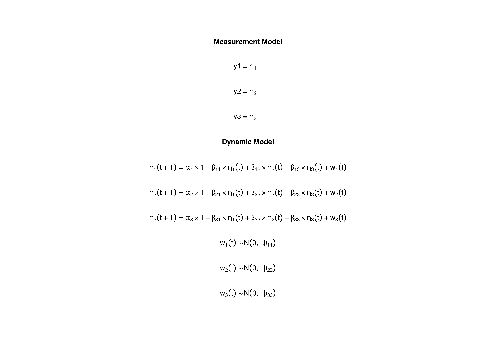

The Vector Autoregressive Model
Ivan Jacob Agaloos Pesigan
2024-01-10
Source:vignettes/var.Rmd
var.RmdModel
The measurement model is given by
\[\begin{equation} \mathbf{y}_{i, t} = \boldsymbol{\eta}_{i, t} . \end{equation}\]
The dynamic structure is given by
\[\begin{equation} \boldsymbol{\eta}_{i, t} = \boldsymbol{\alpha} + \boldsymbol{\beta} \boldsymbol{\eta}_{i, t - 1} + \boldsymbol{\zeta}_{i, t} \quad \mathrm{with} \quad \boldsymbol{\zeta}_{i, t} \sim \mathcal{N} \left( \mathbf{0}, \boldsymbol{\Psi} \right) \end{equation}\]
where \(\boldsymbol{\eta}_{i, t}\), \(\boldsymbol{\eta}_{i, t - 1}\), and \(\boldsymbol{\zeta}_{i, t}\) are random variables and \(\boldsymbol{\alpha}\), \(\boldsymbol{\beta}\), and \(\boldsymbol{\Psi}\) are model parameters. \(\boldsymbol{\eta}_{i, t}\) is a vector of latent variables at time \(t\) and individual \(i\), \(\boldsymbol{\eta}_{i, t - 1}\) is a vector of latent variables at \(t - 1\) and individual \(i\), and \(\boldsymbol{\zeta}_{i, t}\) is a vector of dynamic noise at time \(t\) and individual \(i\), while \(\boldsymbol{\alpha}\) is a vector of intercepts, \(\boldsymbol{\beta}\) is a matrix of autoregression and cross regression coefficients, and \(\boldsymbol{\Psi}\) is the covariance matrix of \(\boldsymbol{\zeta}_{i, t}\).
Data Generation
Notation
Let \(t = 1000\) be the number of time points and \(n = 5\) be the number of individuals.
Let the initial condition \(\boldsymbol{\eta}_{0}\) be given by
\[\begin{equation} \boldsymbol{\eta}_{0} \sim \mathcal{N} \left( \boldsymbol{\mu}_{\boldsymbol{\eta} \mid 0}, \boldsymbol{\Sigma}_{\boldsymbol{\eta} \mid 0} \right) \end{equation}\]
\[\begin{equation} \boldsymbol{\mu}_{\boldsymbol{\eta} \mid 0} = \left( \begin{array}{c} 0 \\ 0 \\ 0 \\ \end{array} \right) \end{equation}\]
\[\begin{equation} \boldsymbol{\Sigma}_{\boldsymbol{\eta} \mid 0} = \left( \begin{array}{ccc} 1 & 0 & 0 \\ 0 & 1 & 0 \\ 0 & 0 & 1 \\ \end{array} \right) . \end{equation}\]
Let the constant vector \(\boldsymbol{\alpha}\) be given by
\[\begin{equation} \boldsymbol{\alpha} = \left( \begin{array}{c} 0 \\ 0 \\ 0 \\ \end{array} \right) . \end{equation}\]
Let the transition matrix \(\boldsymbol{\beta}\) be given by
\[\begin{equation} \boldsymbol{\beta} = \left( \begin{array}{ccc} 0.7 & 0 & 0 \\ 0.5 & 0.6 & 0 \\ -0.1 & 0.4 & 0.5 \\ \end{array} \right) . \end{equation}\]
Let the dynamic process noise \(\boldsymbol{\Psi}\) be given by
\[\begin{equation} \boldsymbol{\Psi} = \left( \begin{array}{ccc} 1 & 0 & 0 \\ 0 & 1 & 0 \\ 0 & 0 & 1 \\ \end{array} \right) . \end{equation}\]
R Function Arguments
n
#> [1] 5
time
#> [1] 1000
mu0
#> [1] 0 0 0
sigma0
#> [,1] [,2] [,3]
#> [1,] 1 0 0
#> [2,] 0 1 0
#> [3,] 0 0 1
alpha
#> [1] 0 0 0
beta
#> [,1] [,2] [,3]
#> [1,] 0.7 0.0 0.0
#> [2,] 0.5 0.6 0.0
#> [3,] -0.1 0.4 0.5
psi
#> [,1] [,2] [,3]
#> [1,] 1 0 0
#> [2,] 0 1 0
#> [3,] 0 0 1Using the SimSSMVARFixed Function to Simulate Data
library(simStateSpace)
data <- Sim2Matrix(
SimSSMVARFixed(
n = n,
mu0 = mu0,
sigma0 = sigma0,
alpha = alpha,
beta = beta,
psi = psi,
time = time,
burn_in = 0
)
)
head(data)
#> y1 y2 y3 time id
#> [1,] -0.53150173 0.8212527 2.2174497 0 1
#> [2,] 0.03280741 -0.3981712 2.4785526 1 1
#> [3,] -0.31722163 1.5413967 1.1638121 2 1
#> [4,] -0.28222201 1.4683295 0.1377762 3 1
#> [5,] -1.04463827 0.7687173 0.4667933 4 1
#> [6,] -0.92475541 1.1649958 1.2460595 5 1Model Fitting
Prepare Initial Condition
dynr_initial <- dynr::prep.initial(
values.inistate = mu0,
params.inistate = c("mu0_1", "mu0_2", "mu0_3"),
values.inicov = sigma0,
params.inicov = matrix(
data = c(
"sigma0_11", "sigma0_12", "sigma0_13",
"sigma0_12", "sigma0_22", "sigma0_23",
"sigma0_13", "sigma0_23", "sigma0_33"
),
nrow = 3
)
)Prepare Measurement Model
dynr_measurement <- dynr::prep.measurement(
values.load = diag(3),
params.load = matrix(data = "fixed", nrow = 3, ncol = 3),
state.names = c("eta_1", "eta_2", "eta_3"),
obs.names = c("y1", "y2", "y3")
)Prepare Dynamic Process
dynr_dynamics <- dynr::prep.formulaDynamics(
formula = list(
eta_1 ~ alpha_1 * 1 + beta_11 * eta_1 + beta_12 * eta_2 + beta_13 * eta_3,
eta_2 ~ alpha_2 * 1 + beta_21 * eta_1 + beta_22 * eta_2 + beta_23 * eta_3,
eta_3 ~ alpha_3 * 1 + beta_31 * eta_1 + beta_32 * eta_2 + beta_33 * eta_3
),
startval = c(
alpha_1 = alpha[1], alpha_2 = alpha[2], alpha_3 = alpha[3],
beta_11 = beta[1, 1], beta_12 = beta[1, 2], beta_13 = beta[1, 3],
beta_21 = beta[2, 1], beta_22 = beta[2, 2], beta_23 = beta[2, 3],
beta_31 = beta[3, 1], beta_32 = beta[3, 2], beta_33 = beta[3, 3]
),
isContinuousTime = FALSE
)Prepare Process Noise
dynr_noise <- dynr::prep.noise(
values.latent = psi,
params.latent = matrix(
data = c(
"psi_11", "psi_12", "psi_13",
"psi_12", "psi_22", "psi_23",
"psi_13", "psi_23", "psi_33"
),
nrow = 3
),
values.observed = matrix(data = 0, nrow = 3, ncol = 3),
params.observed = matrix(data = "fixed", nrow = 3, ncol = 3)
)Prepare the Model
model <- dynr::dynr.model(
data = dynr_data,
initial = dynr_initial,
measurement = dynr_measurement,
dynamics = dynr_dynamics,
noise = dynr_noise,
outfile = "var.c"
)
Fit the Model
results <- dynr::dynr.cook(
model,
debug_flag = TRUE,
verbose = FALSE
)
#> [1] "Get ready!!!!"
#> using C compiler: ‘gcc (Ubuntu 11.4.0-1ubuntu1~22.04) 11.4.0’
#> Optimization function called.
#> Starting Hessian calculation ...
#> Finished Hessian calculation.
#> Original exit flag: 3
#> Modified exit flag: 3
#> Optimization terminated successfully: ftol_rel or ftol_abs was reached.
#> Original fitted parameters: -0.01436224 -0.008084834 0.008022517 0.6906
#> 0.01492941 -0.00319284 0.486072 0.6206747 -0.007399144 -0.113037 0.4161175
#> 0.4941164 -0.01756573 -0.02341745 -0.01479442 0.007374806 -0.01464243
#> -0.003880536 -0.525563 -0.2592167 0.8204044 -0.1864839 -0.7714447 0.3367576
#> -0.4211325 -0.02244622 -0.0987352
#>
#> Transformed fitted parameters: -0.01436224 -0.008084834 0.008022517 0.6906
#> 0.01492941 -0.00319284 0.486072 0.6206747 -0.007399144 -0.113037 0.4161175
#> 0.4941164 0.9825876 -0.02300969 -0.01453682 1.007941 -0.01441039 0.996558
#> -0.525563 -0.2592167 0.8204044 0.829872 -0.6402003 0.2794657 1.150182
#> -0.2303239 1.000425
#>
#> Doing end processing
#> Successful trial
#> Total Time: 2.048893
#> Backend Time: 2.041412Summary
summary(results)
#> Coefficients:
#> Estimate Std. Error t value ci.lower ci.upper Pr(>|t|)
#> alpha_1 -0.014362 0.014043 -1.023 -0.041886 0.013161 0.1532
#> alpha_2 -0.008085 0.014222 -0.568 -0.035960 0.019790 0.2849
#> alpha_3 0.008023 0.014141 0.567 -0.019694 0.035739 0.2853
#> beta_11 0.690600 0.011350 60.845 0.668354 0.712846 <2e-16 ***
#> beta_12 0.014929 0.009421 1.585 -0.003536 0.033394 0.0566 .
#> beta_13 -0.003193 0.009597 -0.333 -0.022002 0.015616 0.3697
#> beta_21 0.486072 0.011496 42.281 0.463540 0.508604 <2e-16 ***
#> beta_22 0.620675 0.009541 65.051 0.601974 0.639375 <2e-16 ***
#> beta_23 -0.007399 0.009719 -0.761 -0.026447 0.011649 0.2232
#> beta_31 -0.113037 0.011431 -9.889 -0.135441 -0.090633 <2e-16 ***
#> beta_32 0.416117 0.009488 43.855 0.397520 0.434715 <2e-16 ***
#> beta_33 0.494116 0.009664 51.127 0.475174 0.513058 <2e-16 ***
#> psi_11 0.982588 0.019656 49.990 0.944063 1.021112 <2e-16 ***
#> psi_12 -0.023010 0.014082 -1.634 -0.050611 0.004591 0.0512 .
#> psi_13 -0.014537 0.014000 -1.038 -0.041976 0.012903 0.1496
#> psi_22 1.007941 0.020166 49.983 0.968417 1.047465 <2e-16 ***
#> psi_23 -0.014410 0.014178 -1.016 -0.042198 0.013378 0.1547
#> psi_33 0.996558 0.019936 49.988 0.957484 1.035632 <2e-16 ***
#> mu0_1 -0.525563 0.403929 -1.301 -1.317249 0.266123 0.0966 .
#> mu0_2 -0.259217 0.474378 -0.546 -1.188980 0.670547 0.2924
#> mu0_3 0.820404 0.445352 1.842 -0.052470 1.693278 0.0328 *
#> sigma0_11 0.829872 0.522970 1.587 -0.195131 1.854875 0.0563 .
#> sigma0_12 -0.640200 0.522709 -1.225 -1.664691 0.384290 0.1104
#> sigma0_13 0.279466 0.426654 0.655 -0.556761 1.115692 0.2562
#> sigma0_22 1.150182 0.730425 1.575 -0.281424 2.581789 0.0577 .
#> sigma0_23 -0.230324 0.485827 -0.474 -1.182527 0.721880 0.3177
#> sigma0_33 1.000425 0.636307 1.572 -0.246714 2.247565 0.0580 .
#> ---
#> Signif. codes: 0 '***' 0.001 '**' 0.01 '*' 0.05 '.' 0.1 ' ' 1
#>
#> -2 log-likelihood value at convergence = 42495.14
#> AIC = 42549.14
#> BIC = 42725.11Parameter Estimates
alpha_hat
#> [1] -0.014362239 -0.008084834 0.008022517
beta_hat
#> [,1] [,2] [,3]
#> [1,] 0.690600 0.01492941 -0.003192840
#> [2,] 0.486072 0.62067474 -0.007399144
#> [3,] -0.113037 0.41611746 0.494116356
psi_hat
#> [,1] [,2] [,3]
#> [1,] 0.98258765 -0.02300969 -0.01453682
#> [2,] -0.02300969 1.00794089 -0.01441039
#> [3,] -0.01453682 -0.01441039 0.99655804